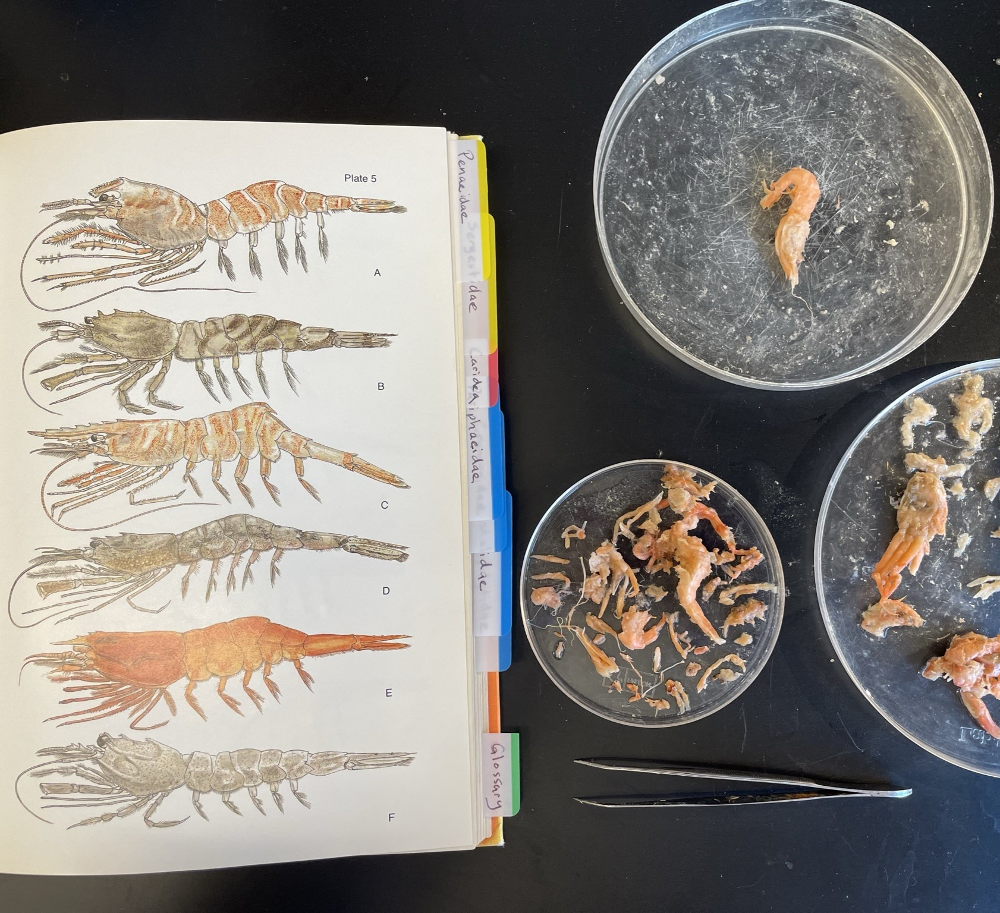
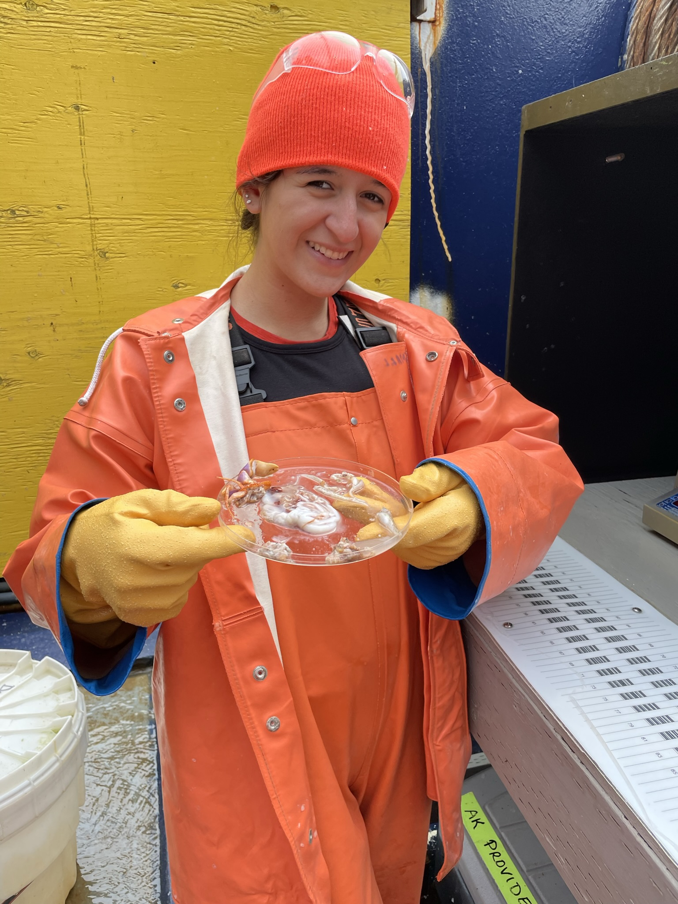

RESEARCH SCIENTIST TROPHIC INTERACTIONS LABORATORY, AFSC
I am currently a research scientist in the Trophic Interactions Laboratory, part of the Resource Ecology and Ecosystem Modeling group at the Alaska Fisheries Science Center. My primary responsibility is processing Alaskan groundfish stomach samples and conducting thorough stomach content analyses. Given our broad taxonomic knowledge of Alaskan marine organisms, we also assist with various ID projects for other teams and serve as an identification resource for the Center. Each summer, I participate in the RACE Groundfish Bottom-Trawl Surveys, performing at-sea stomach scans and collecting samples.
PROJECTS
Laboratory Groundfish Stomach Scans
Our laboratory processes approximately 20,000 stomach samples annually. Last year I alone conducted around 3,000 scans. Each scan involves accurately identifying all prey items down to the lowest possible taxonomic level. I record critical data, including total stomach content weight, individual prey weights, fish standard lengths, commercially significant crab carapace lengths, predator information, life history stages, and stomach fullness. This data contributes to NOAA’s Groundfish Trophic Interactions Database, which is used for fish bioenergetics modeling, ecosystem monitoring, and food web modeling. Given the importance of this data for broader ecological studies, the lab upholds rigorous accuracy standards, with each identification needing to be 100% correct. During the fall of 2023, I helped train a new temporary lab member. They had no prior experience with Alaskan marine organisms, and limited taxonomic identification knowledge. Each year we analyze stomach samples from approximately 10 Alaskan groundfish species. The primary species of interest include Pacific cod (Gadus macrocephalus), walleye pollock (Gadus chalcogrammus), Pacific halibut (Hippoglossus stenolepis), and arrowtooth flounder (Atheresthes stomias).  These species exhibit a wide range of dietary preferences, requiring familiarity with over 100 marine organisms native to the North Pacific. The identification process demands a meticulous, detail-oriented approach as prey items often include highly degraded or partial remains. To ensure high data quality, I often cross-reference a variety of taxonomic keys and morphology-based references. I maintain a flexible and open-minded approach, collaborating with my colleagues to resolve any challenging identifications. Since I did not have previous experience with marine organisms before this role, developing my identification skills required persistence, openness to learning, and humility. In addition to the taxonomic work, I help handle the chemical processes associated with sample preparation. Samples collected at sea are preserved in a 10% formalin solution, and I am responsible for rinsing these samples to remove any traces of formaldehyde and transfer them to a 75% ethanol solution for long-term storage. This process requires neutralizing the formalin and safely disposing of the waste in accordance with AFSC and OSHA standards. These tasks have sharpened my attention to detail in chemical handling and reinforced the importance of adhering to safety protocols in a laboratory setting. I also help oversee safety measures within the lab, including regular inspections of equipment such as eyewash stations, ensuring the wet lab is clean and organized, and confirming that all ethanol-preserved samples are securely stored in flammable materials cabinets. This role has not only strengthened my technical skills but also instilled a commitment to fostering a safe and collaborative working environment for my colleagues.
Seabird Bill Load Analyses
Annually, our lab assists the Auke Bay Labs Center with seabird diet analyses, processing around 500 bill load samples. This project involves identifying cephalopods and fish (often in larval stages) and collaborating with other teams to ensure accurate data collection, requiring familiarity with specialized guides and data entry forms.
Field Participation
As part of the RACE Bottom-Trawl Groundfish Surveys, I spend roughly a month at sea on NOAA-chartered vessels, working alongside a team of scientists and fishermen. Each leg involves conducting 5–6 hauls per day, with catch sizes ranging from 1 to 14 tons. My primary role is performing stomach scans on selected species, completing approximately 700 scans per leg. In addition to sorting fish and invertebrates by species, I participate in biological data collection, which includes sexing fish, measuring fish standard lengths, and collecting otoliths for age determination. I also assist in calibrating and deploying environmental instruments, including temperature, depth, and pressure probes. These field experiences have sharpened my ability to work efficiently under challenging conditions and have enhanced my teamwork and leadership skills, especially in fostering a collaborative, positive, psychologically safe environment aboard the vessel.
TRAINING AND EDUCATIONAL CONTRIBUTIONS
I have helped develop training materials for RACE survey stomach collectors and observers, including instructional videos demonstrating collection procedures.
RECOGNITION
Recipient of the Staff Member of the Quarter Award for Q3 of fiscal year 2024. "Andrea works in the REEM trophic interactions laboratory. She excels at her daily job duties in the lab, always putting forth extra effort to complete assigned tasks promptly and successfully. She is a great team member and always has a positive attitude. In addition to her normal duties, she has taken the lead with several outreach activities. She has led tours of our lab for several groups of visiting students. She hosted a high school student who wanted to job shadow a scientist in our lab. She also organizes and presents science activities for children of all ages at different schools and events in the local area. Andrea also took the lead on giving hands on demonstrations during field season training for stomach collections. Andrea is reliable, dependable, and a great member of our team, and I believe she should be recognized for it."
SAFS INVOLVEMENT
Because of the nature of my position at NOAA, I am affiliated with the University of Washington’s School of Aquatic and Fishery Sciences (SAFS). I attend weekly lab meetings hosted by Dr. Tim Essington and regularly participate in discussions on data analysis and research progress. I also attend weekly Fisheries Seminars, which provide opportunities for networking and engagement with the SAFS community.